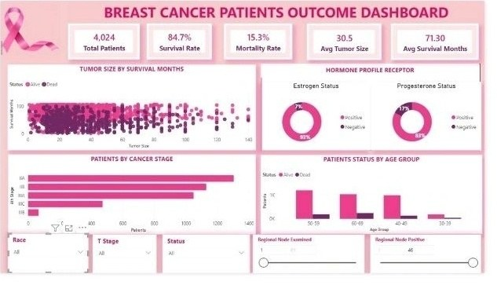

Stage-Driven Survival Drop
Average survival duration declines substantially as cancer stage advances, moving from 90.6 months at Stage IIA down to 40.1 months at Stage IIIC (compared to an overall cohort average of 71.30 months).
A clinical outcome exploration using SQL and Power BI to evaluate survival duration, mortality rates, cancer stage progression, and hormone receptor profiles across 4,024 patient records.

Average survival duration declines substantially as cancer stage advances, moving from 90.6 months at Stage IIA down to 40.1 months at Stage IIIC (compared to an overall cohort average of 71.30 months).
93.3% of patients were Estrogen Receptor positive (ER+), and hormone receptor status tracked closely with patient survival outcomes across the cohort.
Across all 4,024 analyzed patients, overall survival stood at 84.7% while mortality accounted for 15.3%, segmented interactively by race, T stage, status, and regional node counts.
Reach out to discuss SQL data modeling, Power BI dashboard design, or data analytics opportunities.